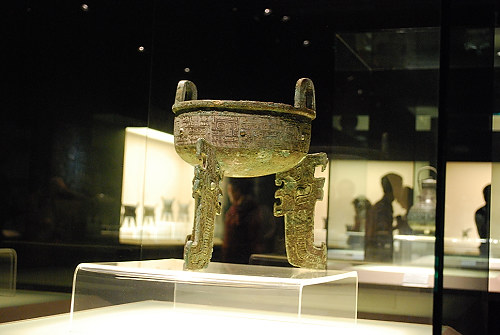

|

Dings were originally made of ceramic materials then later, at the time of the Shang Dynasty (1600-1046 BCE), cast in bronze. This is the period to which the oldest examples of dings date back. Inscriptions found on dings and zhongs are used to study bronzeware script. They were used for cooking, storage and the preparation of ritual offerings to ancestors. I |